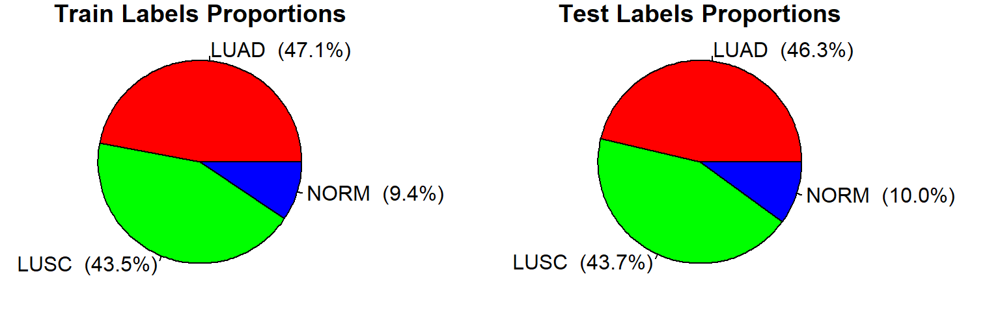

library(here)## here() starts at C:/Users/Admin/OneDrive - Alma Mater Studiorum Università di Bologna/Thesis/LUNG-TCGA-Classifications-Graphical-Analysisfeatures=read.csv(here("data/lung_tpm.csv"), row.names=1)
covariates=read.csv(here("data/lung_cov.csv"), row.names=1)
pancan_covariates=read.csv(here("data/lung_pancan_cov.csv"), row.names = 1)
genesinfo=read.csv(here("data/genes_info.csv"), row.names=1)Get Labels, Protein Coding Genes and compute Aligment Quality Index
#labels
labels=factor(covariates[,2]) #factor labels all together at beginning
#getting protein coding genes only
protein_genes <- which(genesinfo$gene_type == "protein_coding")
#compute AQI
covariates$`Alignment Quality Index`=0.5 *covariates$N_unmapped_prop + 0.167 * covariates$N_multimapping_prop + 0.167 * covariates$N_noFeature_prop + 0.167 * covariates$N_ambiguous_propProducing indexes for train and test
#train/test split
set.seed(33)
train_index <- sample(length(labels), length(labels) * 0.8)
train_prop <- table(labels[train_index]) / length(labels[train_index])
test_prop <- table(labels[-train_index]) / length(labels[-train_index])
# create a 1-row 2-column layout for the two pie charts
par(mfrow=c(1,2), mar = c(1,1,1,5))
# Create labels with both names and percentages
train_labels <- paste(names(train_prop), sprintf(" (%.1f%%)", train_prop*100))
test_labels <- paste(names(test_prop), sprintf(" (%.1f%%)", test_prop*100))
# Create pie charts
pie(train_prop, main = "Train Labels Proportions", labels = train_labels,
col =c("red","green","blue"))
pie(test_prop, main = "Test Labels Proportions", labels = test_labels,
col =c("red","green","blue"))
rm(train_labels,test_labels,train_prop,test_prop)Organizing data in the format PAMR algorithms wants that is:
“A list with components: x- an expression genes in the rows, samples in the columns), and y- a vector of the class labels for each sample. Optional components- genenames, a vector of gene names, and geneid- a vector of gene identifiers.” (from ?pamr.train)
traindata=list()
traindata$y=labels[train_index]
traindata$x=as.matrix(features[protein_genes,train_index])
traindata$geneid=genesinfo$gene_id[protein_genes]
traindata$genenames=genesinfo$gene_name[protein_genes]
traindata$covariates=covariates[train_index,]
traindata$pancovariates=covariates[train_index,]
testdata=list()
testdata$y=labels[-train_index]
testdata$x=as.matrix(features[protein_genes,-train_index])
testdata$geneid=genesinfo$gene_id[protein_genes]
testdata$genenames=genesinfo$gene_name[protein_genes]
testdata$covariates=covariates[-train_index,]
testdata$pancovariates=covariates[-train_index,]
#empty initial reads
rm(features,covariates,pancan_covariates,genesinfo) print(paste0("Nr. training obvs: ", length(traindata$y)))## [1] "Nr. training obvs: 922"print(paste0("Nr. test obvs: ", length(testdata$y)))## [1] "Nr. test obvs: 231"Eventual data transformation to bring data towards normality/stabilising variance:
#leave to all false ---> no transformation
#or select TRUE (at most one) ----> perform selected transformation
log2transf=FALSE
log10transf=FALSE
deseqVST=FALSE
if (log2transf) {
traindata$x=log2(1+traindata$x) #add +1 to avoid Inf
testdata$x=log2(1+testdata$x)
}
if (log10transf) {
traindata$x=log10(1+traindata$x)
testdata$x=log10(1+testdata$x)
}
if (deseqVST) {
dds_train = DESeq2::DESeqDataSetFromMatrix(countData=traindata$x,
colData=data.frame(condition=rep(1,ncol(traindata$x))),design = ~ 1)
vst_train = vst(dds_train, blind=TRUE)
traindata$x = as.matrix(assay(vst_train))
#code to be revised!
vst_test = vst(dds_train, blind=TRUE)
testdata$x = as.matrix(assay(vst_test))
}